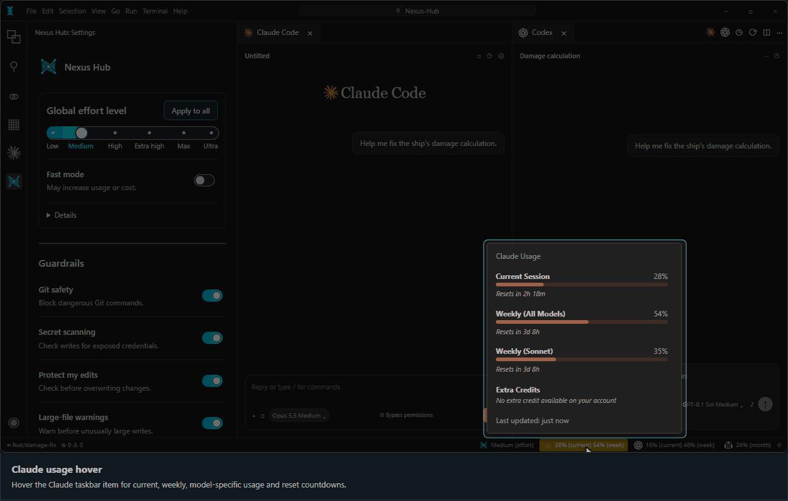
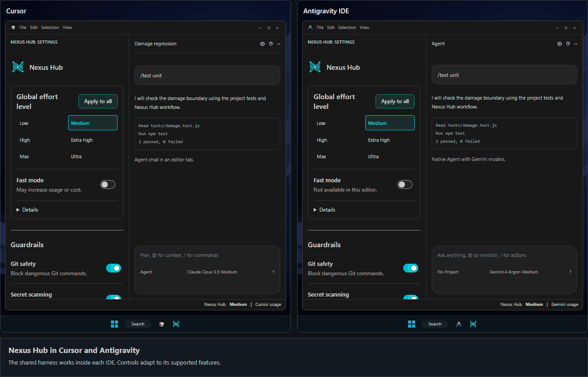

README Visuals
The installer and workflow use the original interactive guide. Settings use the shipped webview. The desktop handoff is an illustrative conversation.
Installation
Open the original installer walkthrough

Development Workflow
Open the original interactive training

Desktop Handoff
Text walkthrough
IDE Settings
Nexus Hub settings beside Claude Code and Codex editor tabs. The panel and usage views use shipped renderers with sample data.

Usage Monitors

Cursor and Antigravity

Command Cheatsheet
Open the original cheatsheet. Run /skills list for the installed catalog.
The complete cheatsheet is now native Markdown in README Commands.